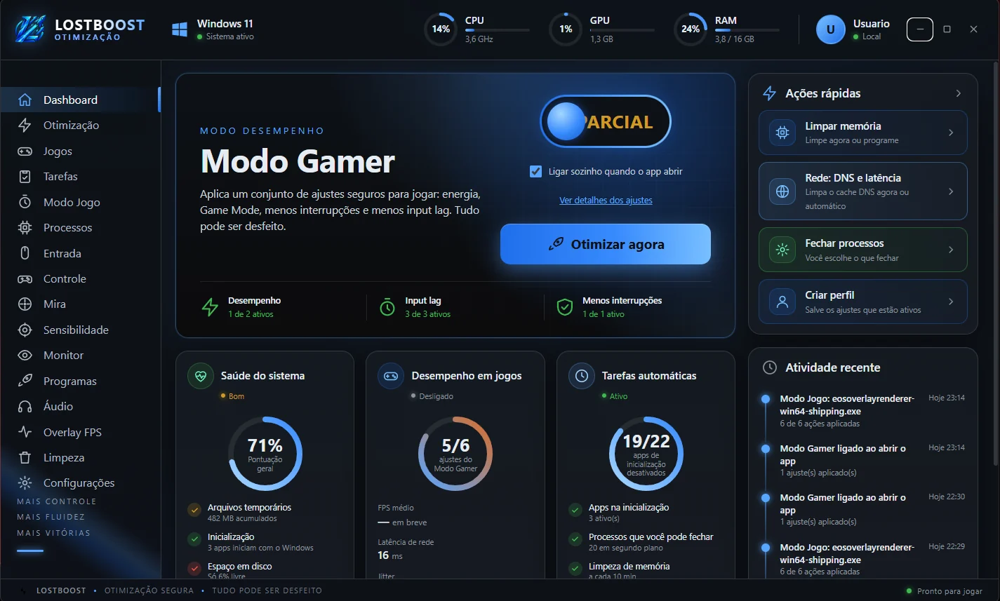

Dashboard
É a tela inicial, a que abre primeiro. A faixa de cima mostra, o tempo todo, o uso de CPU, GPU e RAM do seu PC.
O destaque é o Modo Gamer: uma chave que aplica de uma vez um conjunto de ajustes seguros para jogar (energia, Game Mode, menos interrupções e menos input lag). Ao desligar, tudo volta como estava. O botão Otimizar agora faz o mesmo com um clique.
- Saúde do sistema: nota de 0 a 100 com arquivos temporários, apps que iniciam com o Windows, espaço em disco e temperatura
- Desempenho em jogos: quantos ajustes do Modo Gamer estão ativos, latência e jitter da rede
- Tarefas automáticas: o que está rodando sozinho, como a limpeza de memória
- Ações rápidas (limpar memória, limpar DNS, fechar processos, criar perfil) e a atividade recente
